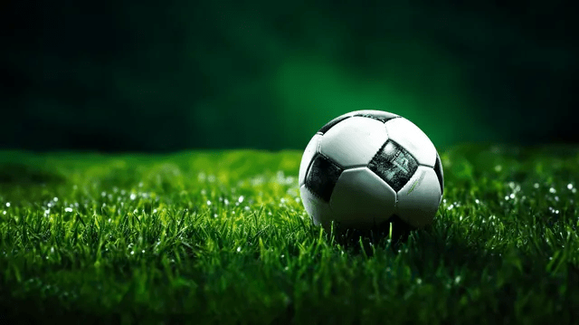

<div class="container">
    <div class="row">
        <h1 class="titulo">mejores esfericos</h1>
        <div class="col-lg-12 col-md-6 col-img">
            
            <!-- lg para pantallas grandes, y md para pantallas medianas
             el lg (uno al abajo del otro) y md (uno al lado del otro) -->
        </div>
        <div class="col-lg-12 col-md-6"> 
        


            <p>En Fútbol Total, creemos que cada pase, cada tiro y cada gol comienza con un elemento esencial: una gran
                pelota.
                Desde nuestros inicios, nos hemos dedicado a fabricar y distribuir pelotas de fútbol de la más alta
                calidad,
                diseñadas para brindar rendimiento, durabilidad y precisión en cada partido, sin importar si se juega en
                una
                cancha profesional, un parque o una calle del barrio.

                Nuestro compromiso va mucho más allá de ofrecer un simple producto. Trabajamos cada día para crear una
                experiencia deportiva completa, combinando innovación tecnológica, materiales de última generación y un
                profundo
                respeto por la pasión que mueve al fútbol. Sabemos que este deporte une culturas, rompe barreras y
                despierta
                emociones en millones de personas, y por eso nos esforzamos en ofrecer pelotas que estén a la altura de
                esa
                pasión.

                Cada una de nuestras pelotas pasa por estrictos controles de calidad, garantizando un bote uniforme, un
                vuelo
                preciso y una resistencia excepcional. Utilizamos materiales ecológicos y procesos de fabricación
                sostenibles,
                porque creemos que el amor por el fútbol también debe reflejar el cuidado por el planeta. Nuestro
                catálogo
                incluye modelos diseñados para todas las edades y niveles de juego: desde pelotas de entrenamiento y
                recreación,
                hasta balones profesionales certificados para competencias oficiales.

                Además, colaboramos estrechamente con clubes, escuelas deportivas y entrenadores, ofreciendo soluciones
                personalizadas, con diseños únicos, logotipos institucionales y colores distintivos que representan la
                identidad
                de cada equipo. Porque entendemos que cada jugador y cada club tiene una historia que contar, y queremos
                ser
                parte de ella.

                En Fútbol Total, no solo vendemos pelotas: impulsamos sueños, fomentamos el trabajo en equipo y
                alimentamos la
                pasión que mueve a generaciones enteras. Ya sea que busques el balón ideal para entrenar, competir o
                simplemente
                disfrutar del deporte más hermoso del mundo, puedes confiar en nosotros para ofrecerte un producto que
                combine
                estilo, tecnología y espíritu deportivo.

                Fútbol Total: donde cada toque cuenta, y cada pelota lleva dentro la pasión por el juego.</p>
        </div>